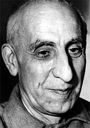

The Liberty Beacon
Investigating the news under the microscope of liberty.
Analyzing it through the telescope of history.
Covert History: The CIA in Iran
Operation TP-Ajax: The CIA"s First Major Coup d’état
10 Mar 2025 - Lamont Michael Kimberlin

The Anglo-Iranian Oil Company in 1951.
Renamed British Petroleum shortly after the 1953 coup.
As reported by James Risen in his detailed piece from 2000 in The New York Times. For nearly five decades, America's role in the military coup that ousted Iran's elected prime minister and returned the shah to power has been lost to history, the subject of fierce debate in Iran and stony silence in the United States. One by one, participants have retired or died without revealing key details, and the Central Intelligence Agency said a number of records of the operation — its first successful overthrow of a foreign government — had been destroyed.

The Shah of Iran and his wife, the Empress Soraya,
arrive at Rome airport from Bagdad August 18, 1953
after the unsuccessful royalist attempt to oust Premier Mohammed Mossadegh.
But a copy of the agency's secret history of the coup has surfaced, revealing the inner workings of a plot that set the stage for the Islamic revolution in 1979, and for a generation of anti-American hatred in one of the Middle East's most powerful countries.

Mohammed Mossadegh became Prime Minister of Iran in March, 1951.